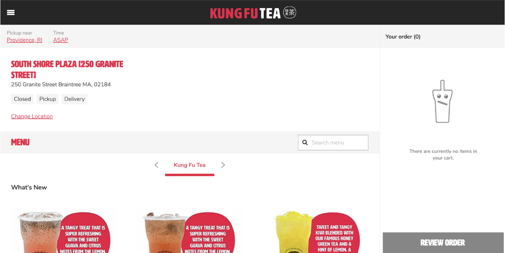
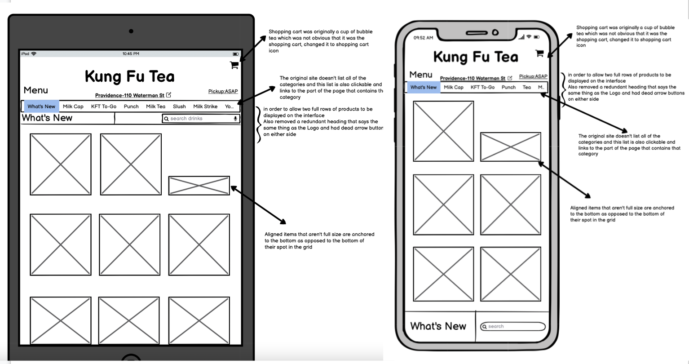
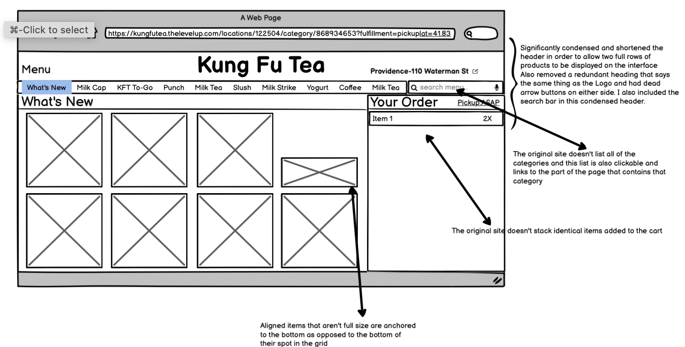

Responsive Redesign
Original Page Problems
Lo-Fi Wireframes
Hi-Fi Prototypes
My Style Guide
Final Redesign
Original Kung Fu Tea Order Page

For this project I chose to redesign the Kung Fu Tea ordering webpage because after using it even once I observed that it was very difficult to find what I was looking for and that some of the buttons don’t do what you might expect as a user.
Original Page Problems
Low Fidelity Wireframes
 
Hi-Fi Prototypes
Visual Style Guide
Redesigned Page
Click the image to go to the redesigned page